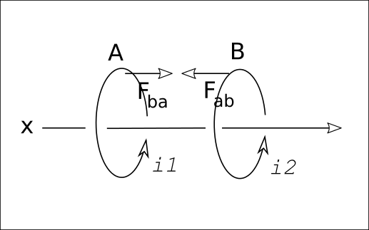
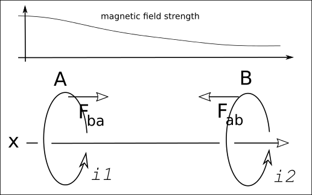
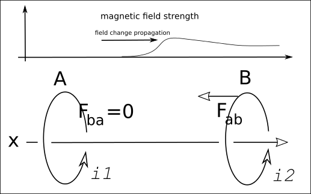
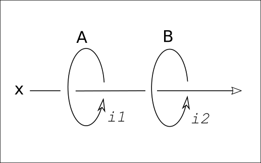
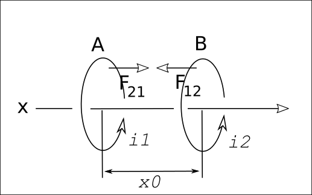
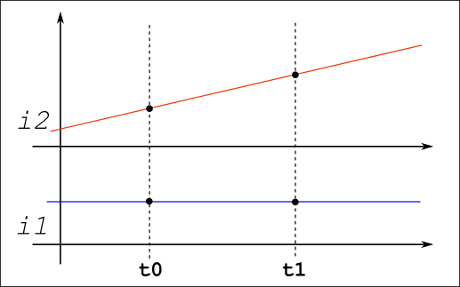
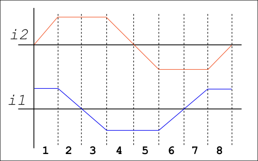
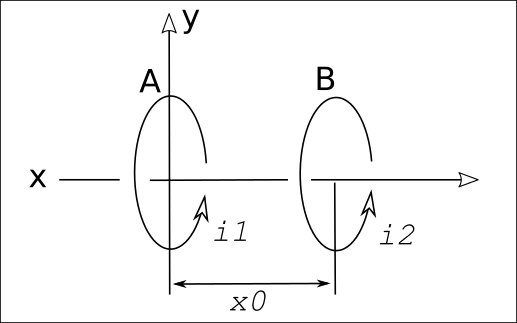
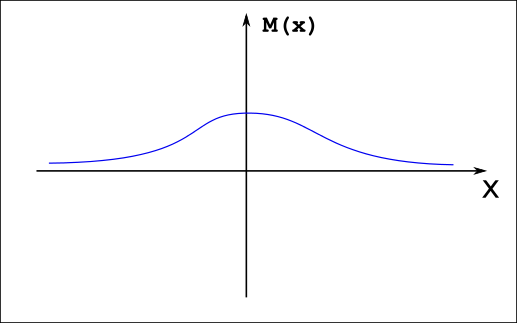
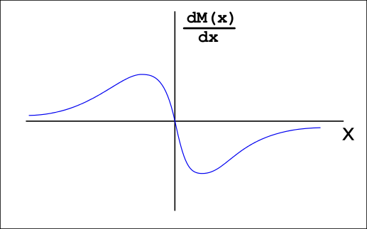

Electro-magnetic converter of the electric power into thrust force (referred to here as EMC) provides a means to directly convert electrical power into thrust force, without use of any mediators, such as heated or ionized gasses, conductive rails, etc.
The operation of EMC is based on present theories of electromagnetism.
In a system comprising of two conductive wire coils `A` and `B`, each carrying electric current of constant value `i_1` and `i_2`, there will be magnetic forces on both coils. These forces are a result of interaction between currents in each coil and magnetic field produced by those currents. In this static case, force on coil `A` (`vec F_ba`) will be equal, but opposite, to the force on coil `B` (`vec F_ab`).
Figure 01.
However, when currents in these coils are changing over time, forces `vec F_ba` and `vec F_ab` will not be equal in value, due to the following:
Based on these two assumptions, it is possible to achieve a stationary state where currents `i_1` and `i_2` are changing in a way that produces consistent difference between forces `vec F_ba` and `vec F_ab`, a resultant force `F_r`, where that resultant force has constant value, not equal to zero, and direction. This generates a constant thrust on the system made of wire coils `A` and `B` as a result of a tendency of the system to move relative to the generated magnetic field.
In order to better explain the basics of EMC operation, let's take a look at a very simple model of operation.
In this model we have two coils, `A` and `B`, each carrying a constant electric current `i`. Magnetic field generated by coil `A` will create a magnetic force `vec F_ab` on coil `B`. Same goes for coil `B`: magnetic field generated by it will create a magnetic force `vec F_ba` on coil `A`.
These two forces are equal in value but opposite in direction and their sum, the net force `vec F_r = vec F_ab + vec F_ba`, will be equal to `0`.
Figure 01a.
Let's observe what happens if we instantly turn off electric current in coil `A`. This is not practically possible, but in order to better illustrate the main point of EMC operation, let's assume we can do that.
At the moment electric current in coil `A` drops to `0`, magnetic force `vec F_ba` drops to `0` too, since the current is gone. However, and this is the key part, force `F_ab` will not become equal to `0` yet. The reason for this is that the magnetic force is a result of interaction between electric current running in coil `B` and magnetic field, produced by coil `A`, at the location of coil `B`.
Instant drop of current in coil `A` to `0` will cause it's magnetic field to drop to `0`, but this change will not immediately propagate to the location where coil `B` is. It will take very small, but finite amount of time for magnetic field at the location of coil `B` to also drop to `0`. This amount of time equals to distance between the coils divided by speed of light in vaccum.
Figure 01b.
Only at the moment when magnetic field at the location of coil `B` drops to `0` will force `vec F_ab` become `0` and we will again have `F_ab = F_ba` and net force `F_r = 0`.
However, during that tiny fraction of time needed for the change of magnetic field to propagate from coil `A` to coil `B`, forces `F_ab` and `F_ba` will not be equal and their sum will be `!= 0`.
This is the key point that EMC operation is based on.
It is not possible to instantly turn off an electric current in a coil, but it is possible to change the current in one way or another. And any change in current changes magnetic field produced by it and those changes propagate through space at the speed of light.
Let's see what we can come up with based on those facts.
We will use two conductive wire coils, `A` and `B`, placed and aligned co-axially at a distance `x_0`. Each of wire coils is made of one turn of conductive wire. Each carries electric current, current `i_1` in coil `A` and `i_2` in coil `B`.
Figure 02.
As a result of electric currents flow, there will be magnetic field generated by these two coils. Strength of the magnetic field produced by an electric current is directly proportional to the electric current strength. Magnetic force on a wire coil is directly proportional to the electric current strength carried by that wire coil, and a magnetic field strength produced by the electric current carried by the other coil. We will designate these forces on wire coils with `F_12` and `F_21`.
These forces have values:
where `K` is coefficient which depends on the geometry of the system and is constant over time.
In the simple system we have set up, these two forces will be colinear with the `x` axis.
Figure 03.
Resultant force on the entire system is:
and since `vec F_12` and `vec F_21` are co-linear we can simply use:
If we start chaging current `i_1` and/or `i_2` strength, forces `F_12` and `F_21` will change over time. We will annotate previous formulas to account for this fact like so:
In order to illustrate principle of EMC operation, we will observe a simple case where current `i_1` is constant and current `i_2` increasing in linear fashion.
Figure 04.
In the moment `t_1`, we would have:
Here we come to the key points for EMC operation. First point is: forces `F_21` and `F_12` are a result of interaction between electric current and magnetic field, and not a result of interaction with another electric current. And the second one: changes in magnetic field in vacuum propagate at the speed of light.
This effectively means that, as electric current `i_2` steadily rises, force `F_12` on coil `B` will be proportional to value of the `i_2` in moment `t_1` and to the value of `i_1`.
However, force `F_21` on coil `A` will be proportional to the value of `i_1` in moment `t_1` and the value of `i_2` in moment `t_0`. Reason for this is that, in moment `t_1`, current `i_1` interacts with the magnetic field produced by `i_2` in `t_0`. Difference `Delta t = t_1 - t_0` is equal to the time that is needed for change in magnetic field to propagate from coil `B` to coil `A` and is equal to `x_0 / c`, where `c` is the speed of light in vacuum.
This means that forces `F_12` and `F_21` in moment `t_1` are equal to:
Here it turns out that the resultant force is not equal to zero, since current `i_2` changes and `i_2(t_1) != i_2(t_0)`.
If current `i_2` rises, net force will be negative, which in this setup means it will be directed along `x` axis, right-to-left.
Goal here is to have EMC produce a net force, if not constant, then at least directed in the same direction at all times during operation.
It turns out this is fairly simple to achieve by using the following wave forms for currents `i_1` and `i_2`:
Figure 05.
The wave forms are divided into 8 segments in such a way that for each segment only one of the currents is linearly changing while the other one is constant. Crossing zero point and changing sign means that an electric current is changing direction in the conductive wire coil.
By using the same reasoning from previous section (which corresponds to the case in segment 1) and taking into account when electric currents are positive and when they're negative, it is easy to conclude that the net force `F_r` is always negative and constant in value, which means it is always directed from right to left on our diagram in Figure 03.
Detailed analysis will not be given here since it is simple repetiton of reasoning from previous section, making sure to take into account when electric currents are positive/negative and a fact that in some segments `i_1` is constant (positive or negative) and `i_2` is changing (rising or falling, which makes `i_2(t_1) - i_2(t_0)` positive or negative) and in others it is the other way around.
Forces `F_12` and `F_21` are changing directions as currents change from positive to negative and back, but the net result stays negative and constant.
It is fairly obvious that Figure 05 resembles two sine waves shifted by 90 degrees. For that reason, we will assume that currents `i_1` and `i_2` change as a sine wave functions:
In order to come up with quantitative estimate of the net force, we will again work with two wire coils, `A` and `B`, placed co-axially along `x`-axis. We will also place coil `A` to be at the `x`-axis zero point and coil `B` at the distance `x_0`. Each coil will have only one turn of conductive wire. Coil `A` will carry electrical current `i_1` and coil `B` current `i_2`.
Figure 06.
We will use the formula of calculating a magnetic force on a wire coil via magnetic flux:
where:
For our two coils we will have:
and
Electrical currents `i_1` and `i_2` will be:
Magnetic flux through the coil will be:
where
Using mutual inductance, magnetic forces become:
Since electrical currents don't vary with respect to value of `x` (distance between coils), and `M_12 = M_21`, we'll have:
These two forces are equal for static case, when currents are constant, and are strictly not equal for general case, when currents are changing.
In order to estimate net force value, we will have to take into account the facts that:
This phase shift comes from the finite speed of flux change propagation through space and is one of the key points for EMC operation.
Electrical currents in coils are dependent on time like so:
The phase shift we need to introduce depends on distance between two coils, on their position on `x`-axis:
where:
For `i_1` we will have negative phase shift ( `- k * x` ) since coil `A` is to the left of the coil `B`.
For `i_2` we will have positive phase shift ( `+ k * x` ) since coil `B` is to the right of the coil `A`.
`i_2` also has position of the coil `B` on `x`-axis factored in and the phase shift becomes: `+ k * ( x - x_0 )`.
Taking all this into account, magnetic flux for coils becomes:
Since we will need derivative of `M(x)` in order to get the final formula for net force, let's take a look at how `M(x)` function looks like in general case:
Figure 07.
First derivative `d/dx M(x)` would then look like this:
Figure 08.
It is important to note here that:
and
First derivatives of `Phi` by `x` will be:
and
Since we are calculating flux `Phi_12` through coil `B`, `x` will be equal to `x_0`:
For coil `A`, `x` will be equal to `0`:
Taking into account that:
these two become:
Magnetic force on a coil is:
Using our resutls for `d/dx Phi` from previous section we get:
Substituting for `i` and `d/dx Phi` we have:
Adding those two together and executing basic trigonometric transformations we get
This expression shows that net force is not equal to 0.
In order to evaluate the net force, we will simplify the expression. Let's assume that:
in which case we can assume:
and since it is:
then, for the case when distance between the two coils is much smaller than the wavelength, we will have:
Having in mind that for positive `x_0` (it can't be negative, it is a physical distance between the two coils), `d/dx M(x_0) * x_0` is negative and `M(x_0)` is positive, we can see that for some specific geometry of coils (diameter and distance) `d/dx M(x_0) * x_0 + M(x_0)` can be maximized or even made to be equal to `0`.
To estimate the net force, we will assume:
In this case we have net force to be:
We can say that, in general, the net force is about million times smaller than the product of maximum current values in both coils.
Using finite element analysis we can calculate net force on arbitraty coil geometries and, in general case, above estimate turns out to be satisfactory.
Since the net force produced by EMC is practically negligible, pondering further on EMC characteristics would be practically un-practical. However, since it provides loads of fun for the nerds and other similar Earthly creatures, I did it anyways.
It turns out, among other things, that:
There were quite a bit more points and notes and thingies, but I'm just too lazy to retype them all here...
Everybody needs a hobby.